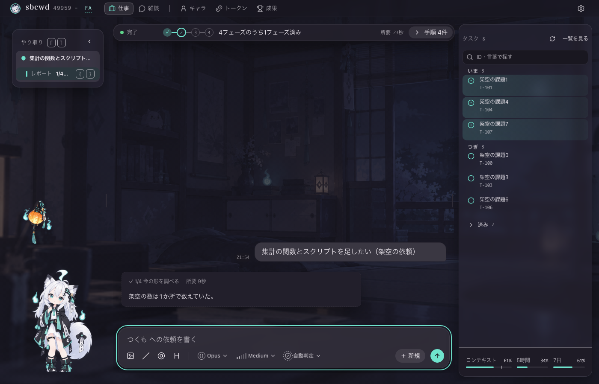
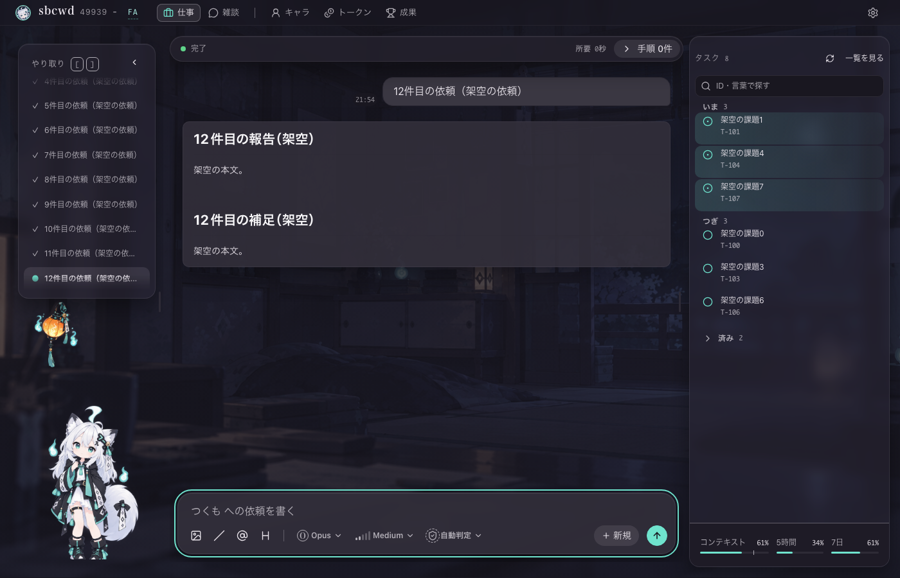
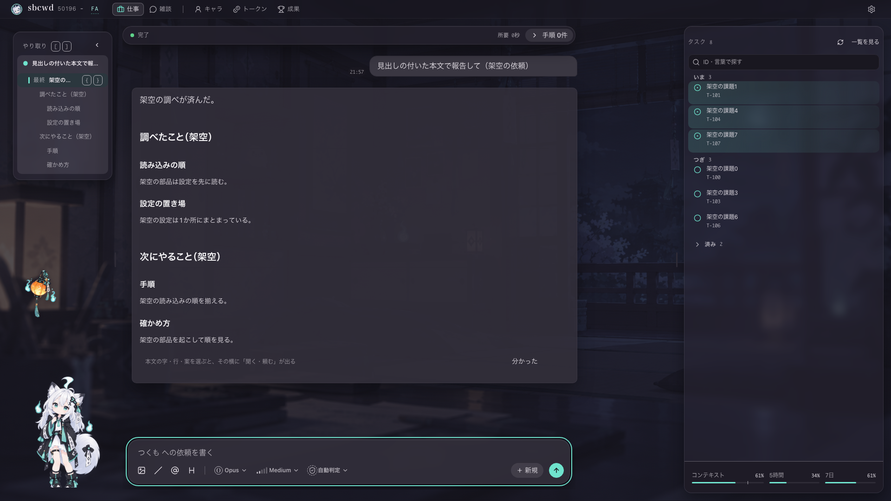

4つの形
A と B の差は「やり取り12件」で、B と C の差は「読む」でいちばん見える。
今の形で測ったこと
疑似セッションを 2026-11-17 の画面で撮って測った。パックは tsukumo（絵は 1145×1374px）。
| 測ったもの | 値 | 起きていること |
|---|---|---|
| 立ち絵（1400×900） | 箱 214×342 → 絵 214×257 | 列の幅（238px）で頭打ちになり、箱の上が 85px 空く |
| 立ち絵（1920×1080） | 箱 214×410 → 絵 214×257 | 画面が広くなっても絵は同じ大きさで、列の高さ 1007px の 26% |
| 提灯（左上の席） | 下端が頭の 53px 上 | 箱の上端を基準に置くので、絵が箱より低いと頭から離れて宙に浮く |
| やり取りの題 | 全角 11 字ほど | 「集計の関数とスクリプ…」で切れる。レポートの行の題は 3 字ほど |
| やり取りの列の高さ | 1件 137 / 12件 397 | 件数に比例して伸び、12件で提灯のすぐ上まで埋まる |
| 空き（働く場面） | 264px | やり取りの列の下端から提灯まで、背景だけが見える |
3つの案の違い
立ち絵の箱を描かれる絵に合わせること、足元に接地の影を置くこと、見ているやり取りの題を2行まで折り返すことは、3つの案に共通。
| A 整える | B いまに絞る | C 台座 | |
|---|---|---|---|
| 列の幅（1400 / 1920） | 266 / 340 | 266 / 340 | 301 / 380 |
| 立ち絵（1400） | 242×290 | 242×290 | 277×332 |
| 立ち絵（1920） | 316×379 | 316×379 | 356×427 |
| 常に出すもの | 全部のやり取りと、見ているやり取りの見出し | 見ているやり取りの題と、その見出し | 見ているやり取りの題と、読んでいる見出しの1行 |
| ほかのやり取り | 列の中で転がす | 一覧の口から開く（列より広い面） | 一覧の口から開く（見出しもここで選ぶ） |
| 列の高さ（12件） | 466 | 217 | 96 |
| 列の高さ（見出し6つ） | 394 | 329 | 96 |
| 前後へ移る口 | キー [ ] の印だけ | キーの印がそのまま押せる口になり、「3 / 12」で位置を言う | B と同じ |
| やり取りの列の置き場 | 列の上 | 列の上 | 列の下端。入力欄と下端をそろえ、立ち絵がその上に立つ |
| 提灯（左上の席） | 頭の左上（絵の箱が基準） | 頭の左上（絵の箱が基準） | 列の上端から紐で吊るす |
| 背景 | 今のまま | 今のまま | 立ち絵のまわりだけ覆いを薄くする（75% → 44%） |
| 中央の列の幅（1400） | 797 → 769 | 797 → 769 | 797 → 734 |
広い画面（1920×1080）
今の形は列の幅が 238px のままなので、画面が広いほど立ち絵が相対的に小さくなる。3つの案は列の幅が画面の幅に連れて広がる。
一覧を開いたとき（B・C）
一覧の面は幅 344px で、題を2行まで出す。外を押すか Esc で閉じる。[ ] のキーは、開かなくても効く。
仕切りで列の幅を変えたとき（B）
左の列に置く要素の検討
候補を「同じ情報は1か所にだけ出す」で照らした。新しく足す情報は残らず、採るのは今ある情報の出し方の2つ。
| 候補 | 判定 | 理由 |
|---|---|---|
| 見ているやり取りの現在地 | 採る（B・C） | 何件目か・どの見出しか。やり取りの列がもともと持つ情報を短く言う形で、新しい情報ではない |
| 足元の接地の影 | 採る（A〜C） | 立ち絵が背景の床に立って見える。情報は増えない |
| 最新のセリフの吹き出し | 見送り | 会話の流れが持つ。立ち絵に付けると同じセリフが2か所に出る（ADR 0058） |
| いまの状態・フェーズ | 見送り | 進行の帯と、流れの末尾の行が持つ |
| タスクと使用量 | 見送り | サイドバーが持つ |
| キャラクターの名前の札 | 見送り | 流れのセリフの行と入力欄が名前を出している |
| きょうの成果の件数 | 見送り | 成果の画面が持つ。常に出す対象（タスクの状態と使用量）ではない |
| ほかの画面への入口 | 見送り | 上部の帯の1か所に集めてある |
| 席を増やす（壁の棚など） | 見送り（別件） | 席のデータの形が変わる。背景の絵と噛み合うかはパックごとに違う |
おすすめは B
- 働くあいだは小さく、読むあいだは目次になる。働くあいだは題と途中のレポートの1行だけ（152px）で、最終レポートが出ると見出しが並ぶ。局面に合わせて中身が変わり、置き場は動かない。
- 過去のやり取りは、要るときだけ広い面で読める。12件を列に並べると題は 13 字で切れるが、一覧の面なら2行まで出る。
- 目次を常に出したまま、立ち絵を大きくできる。C は立ち絵がいちばん大きいが、目次が1行になり、中央の列が 63px 狭くなる。
- C の明かりは、B にも足せる。背景の暗さの下限（70%）を立ち絵のまわりだけ破るので、採るかは別に決める。
今の画面の実物の画
架空の疑似セッションを 2026-11-17 の画面で撮った。上の「今の形」は、この画の寸法を写している。





